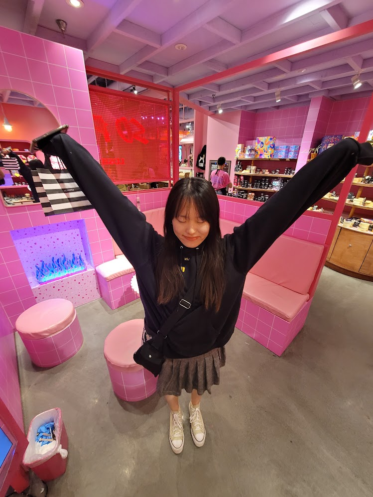

Hi! My name is Michelle, and I'm currently a junior at UCLA majoring in Computer Science as well as double minoring in Digital Humanities and Philosophy. One of my goals is to become capable of creating ethical software that can be used to improve critical infrastructure in society, and I am looking forward to how the content covered in class as well as the course project will better inform me in achieving this!
In my free time, I like to draw and watch anime. My favorite artists are:
- Harukawa Sango (manga artist)
- Ishida Sui (manga artist)
- Jean Giraud, a.k.a. Moebius (bande dessinée artist)